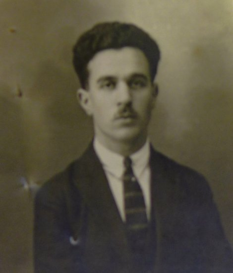

La Rue Bayon
En 1948, la rue Raspail est renommée rue Bayon en hommage à Marcel Bayon, policier municipal devenu sous-brigadier. En 1941, il reçoit la médaille d’honneur de la police municipale. Cette même année, il s’installe au 2 bis, rue Victoria à Saint-Maur-des-Fossés, et se fait réformer en 1942 en raison de l’occupation allemande comme le témoigne son épouse: « Fervent patriote, l’accomplissement de son service sous l’occupation, trop souvent prescrit par les autorités ennemies, lui était devenu insupportable » et ce, grâce à un faux dossier médical. Enfin, il rejoint un groupe de résistants de Saint-Maur, « Ypres ». Il est tué le 20 août 1944 sur le pont de Bonneuil.
